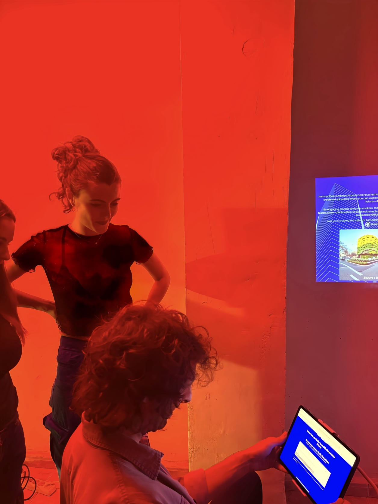

Introducing metropol{ia}, a platform combining AI and immersive technologies to create virtual worlds where you can explore and shape the future of your city.
By bridging the gap between citizens and policymakers, metropol{ia} fosters closer collaboration to co-create inclusive, liveable and sustainable cities.
Click on the pins in the map and either scan the QR code with your phone or click on the link provided in the description to access the immersive experiences.
Embark on a virtual journey through various portals around Barcelona, each depicting possible future scenarios (based on the four future scenario archetypes) of the city resulting from EU Green Deal strategy, the European Commission's plan to decarbonise the European economy.
What do electoral programmes really mean for you? metropol{ia} and FuturePortals collaborated to simulate the impact of electoral programmes ahead of the regional Catalan elections in May 2024. Users were invited to experience future scenarios of Plaça d'Espanya based on proposals of the 8 parties running for election, and to cast a vote for their favourite one.
Barcelona launched the Nature Plan to enhance Barcelona's green infrastructure, conserve biodiversity, and promote urban nature through 20 actions and 100 projects. metropol{ia} developed an application for citizens to provide feedback on the possible futures created by the Nature Plan and generate immersive visualisations of their own preferred futures.

AI Website Builder